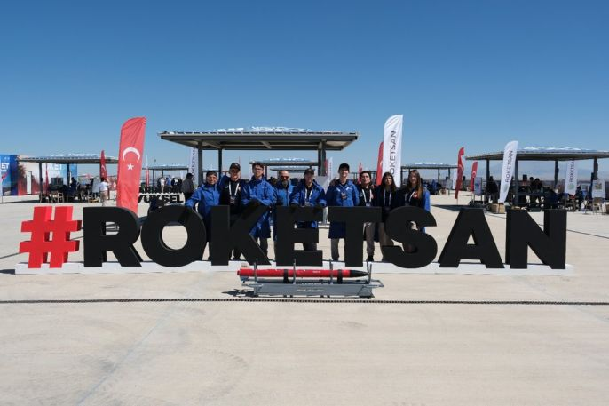
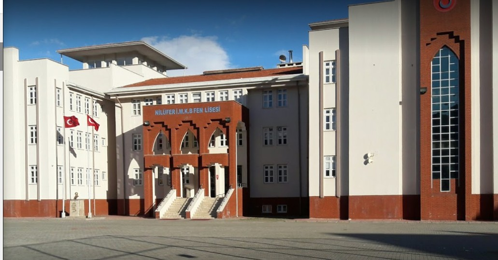

İlk sezon
İlk roketimiz kısmi başarıyla tamamlandı.
8.Türkiye
Nilüfer Borsa İstanbul Fen Lisesi’nin Ar-Ge birimi. Roket, su altı aracı ve İHA geliştiriyoruz. Aurora Roket Takımımız TEKNOFEST 2026’da 1.629 takım arasında Türkiye birincisi oldu.
Bursa, Nilüfer · 2024’ten beri TEKNOFEST’te
1.038 puan, 1.000 puanlık tavanın üstünde
Birçok lisede bir fikir proje ödevi olarak başlar ve not alınınca biter. Bizde aynı fikir bir rapora, bir prototipe, sonra bir yarışma sahasına gider.
NIFL ARGE’yi okul müdürümüz Mustafa Ersoy kurdu. Bugün roket, su altı, hava, ekoloji ve TÜBİTAK projelerinde çalışan öğrencileri aynı çatı altında topluyor. Amacımız Ar-Ge kültürünü önce okulumuzda, sonra Bursa’da ve Türkiye’de yaymak.

7–13 Eylül 2026, Aksaray Hisar Atış Alanı. Roketimiz kalktı, tepe noktasında ayrıldı, paraşütlerini açtı ve indi. Gövdeyi ve faydalı yükü GPS ile 18 dakikada bulduk.
Takım 2024’te 16 öğrenciyle kuruldu; danışmanı bilgisayar öğretmenimiz Aşir Çalışkan. Her sezon ön tasarım, kritik tasarım ve atışa hazırlık raporlarıyla başlar, atış alanında biter.
İlk roketimiz kısmi başarıyla tamamlandı.
8.Türkiye
Düşüşten öğrendiklerimizle tasarımı baştan kurduk; montaj süresini yarıya indirdik.
8 → 4saat montaj
25 finalistten biri olduk; Semrük 3.350 metreye çıktı ve 1.038 puan aldı.
1.1.629 takım arasında
Yeni sezonda A1 ve A2 kategorilerinde iki ayrı takımla yarışıyoruz.
2takım
Bursa’nın devlet fen liselerinden biri. Binasını Borsa İstanbul yaptırdı; adı da buradan geliyor. Öğrenciler LGS ile yerleşiyor.

Roket motorundan aviyonik kartlara, atış alanına ulaşımdan atölye malzemesine kadar her destek bir projeyi bir adım öne taşır.
Roketin, aracın ya da takım formalarının üzerinde.
Bu sitede ve sosyal medya hesaplarımızda.
Yarışma raporlarında ve sunumlarda.
Atölye ziyareti ya da atış günü buluşması.
Formu doldurmanız yeterli. Bir öğretmenimiz ve ilgili takımın kaptanı sizinle iletişime geçer, ihtiyaç listesini birlikte konuşuruz.
Evet. Formda desteklemek istediğiniz projeyi seçin ya da “NIFL ARGE’nin tamamı” deyin; destek seçtiğiniz yere gider.
Elektronik kart, baskı, kompozit malzeme, ulaşım gibi ayni destekleri de konuşabiliriz. Mesajınızda ne sunabileceğinizi yazın.
Formdan bir gün önerin; okul yönetimiyle planlayıp sizi Teknonif atölyesinde ağırlayalım.
Evet. Formda destek türü olarak “Bağış”ı seçin; bağışın nasıl yapılacağını size e-postayla iletelim. Her tutar bir projeyi bir adım öne taşır.
Doğrudan yazmak isterseniz: iletisim@niflarge.example